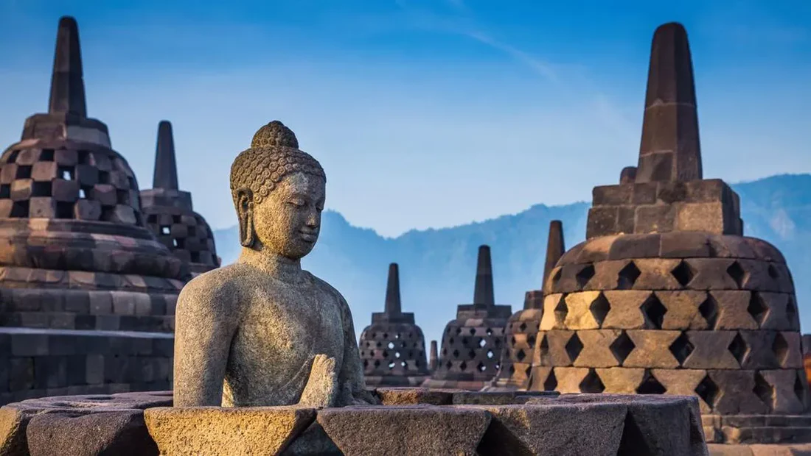
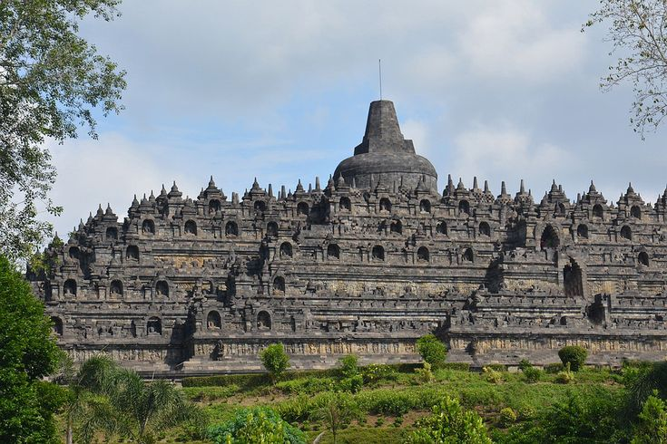
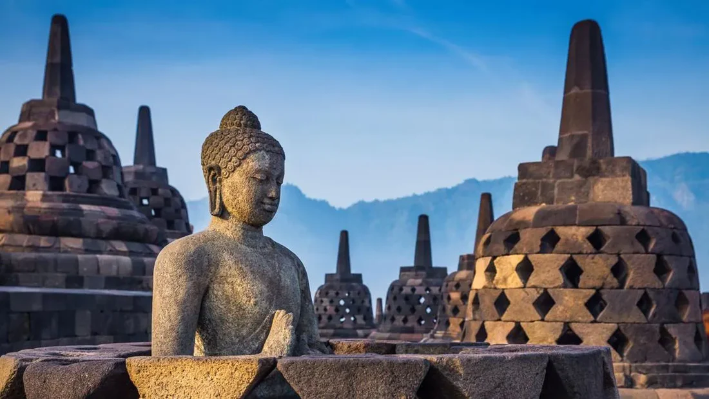
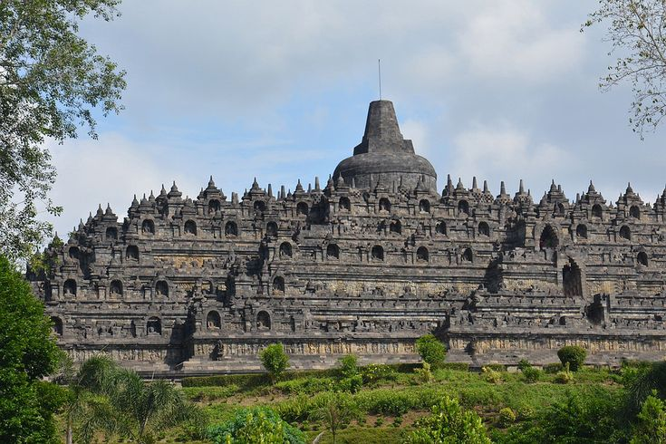

Kritik Seni
Candi Borobudur
 



Candi Borobudur, yang terletak di Magelang, Jawa Tengah, Indonesia, merupakan salah satu situs warisan budaya dunia yang dibangun sekitar tahun 750 hingga 850 Masehi oleh Dinasti Syailendra. Candi ini memiliki luas sekitar 123 x 123 meter, dengan tinggi asli mencapai 42 meter, meskipun sekarang hanya sekitar 35 meter setelah pemugaran. Struktur Borobudur terdiri dari sekitar 2 juta balok batu andesit dengan volume keseluruhan sekitar 55.000 meter kubik. Batu-batu ini disusun menggunakan teknik interlock atau sambungan antar-batu tanpa semen, menunjukkan keterampilan teknik yang sangat presisi dari para pembuatnya. Keindahan Borobudur semakin sempurna dengan 2.672 panel relief yang memuat berbagai cerita dan ajaran Buddha, serta 504 arca Buddha yang tersebar di seluruh tingkatan candi.
Candi Borobudur adalah monumen Buddha terbesar di dunia, terletak di Magelang, Jawa Tengah. Candi ini dibangun pada abad ke-8 dan ke-9 Masehi, menggambarkan ajaran Buddha melalui arsitektur dan relief yang kompleks. Warna dominan candi adalah abu-abu dari batu andesit yang memberikan kesan alami dan tradisional. Keberadaan lumut dan algae pada batu menambah nuansa hijau yang kontras, menciptakan estetika yang harmonis. Warna-warna ini juga mencerminkan kedamaian dan ketenangan, yang sesuai dengan konteks spiritual candi. Candi Borobudur memiliki bentuk stupa yang terinspirasi oleh kosmologi Buddha. Posisi Candi: Terdapat sembilan tingkat, dengan empat sisi berbentuk persegi di bagian bawah dan stupa bulat di puncak. Setiap tingkat melambangkan tahapan spiritual yang harus dilalui untuk mencapai pencerahan, dengan bentuk yang simetris dan proporsional. Komposisi candi sangat terstruktur, dengan setiap tingkat memiliki tata letak yang terencana. Relief yang menghiasi dinding candi terletak dalam urutan naratif, menggambarkan ajaran Buddha dan kehidupan historis. Komposisi visual ini mendukung pengunjung dalam memahami perjalanan spiritual, dari dunia material menuju pencerahan. Penempatan stupa kecil di sekitar puncak menambah kesan kedamaian dan keseimbangan. Candi Borobudur adalah contoh luar biasa dari seni dan arsitektur yang tidak hanya indah secara visual tetapi juga kaya makna. Kombinasi warna, bentuk, dan komposisi menciptakan pengalaman spiritual yang mendalam bagi pengunjung.
Candi Borobudur adalah candi Buddha terbesar di dunia yang memiliki makna filosofis dan simbolis
yang mendalam. Candi Borobudur memiliki makna mendalam sebagai perjalanan spiritual menuju pencerahan dalam ajaran Buddha, yang tercermin dari struktur tiga tingkatnya: Kamadhatu (dunia nafsu), Rupadhatu (dunia berbentuk), dan Arupadhatu (dunia tanpa bentuk). Selain sebagai tempat ibadah, Borobudur juga melambangkan kosmologi alam semesta dan kehidupan manusia, dari ikatan duniawi hingga mencapai kebebasan mutlak. Candi ini tidak hanya menjadi pusat spiritual, tetapi juga warisan budaya dan sejarah yang mencerminkan kejayaan peradaban kuno Nusantara. Simbol utama dari Candi Borobudur adalah perjalanan spiritual menuju pencerahan.
Struktur candi ini berbentuk mandala, yang mencerminkan kosmologi Buddha tentang alam semesta
dan tahapan perjalanan spiritual. Warna abu abu melambangkan kesederhanaan, keseimbangan, dan kefanaan hidup yang selaras dengan ajaran Buddha.
Candi Borobudur memiliki tiga tingkatan, yaitu:
1. Kamadhatu - bagian bawah candi yang melambangkan nafsu dan dunia yang penuh hasrat.
2. Rupadhatu - bagian tengah yang melambangkan bentuk dan dunia fisik.
3. Arupadhatu - bagian atas yang melambangkan tanpa bentuk, dunia spiritual dan kesempurnaan.
Pembuatan Candi Borobudur ini bertujuan sebagai tempat ziarah dan meditasi bagi para umat
Buddha, membantu mereka memahami ajaran Buddha melalui relief yang menggambarkan kisah
kehidupan Buddha dan nilai-nilai spiritual.
Menurut kelompok kami Candi Borobudur merupakan mahakarya arsitektur dengan kelebihan ukiran dan struktur yang sangat detail, mencerminkan keterampilan tinggi para pengrajin kuno. Kekurangan lokasi candi di area terbuka membuat suhu di sekitarnya cukup panas, terutama pada siang hari, sehingga bisa kurang nyaman bagi pengunjung. Menurut kelompok kami Candi Borobudur adalah Candi yang bagus karena memiliki gaya arsitektur yang sangat detail. Menurut kelompok kami juga,